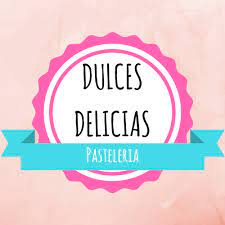

Parte de los actuales recetarios de repostería parten de fórmulas antiguas o modernas, fruto del gusto de la gente, frente a los cambios posteriores a los que fueron sometidas las artes culinarias con la adición de nuevos ingredientes para la producción de una nueva serie. Entre los escasos que, respecto a los dulces, han llegado a nuestros días destaca el escrito a fines del siglo XIV por el juez municipal y repostero Carlos Payán Romero (Camas, 1845-1931), de gran interés por cuanto aporta las recetas reposteras que heredó o recreó, algunas de las cuales (por ejemplo la del tocino del cielo), por la razón apuntada, nada tienen que ver, salvo en el nombre, con las actuales.

18 de Octubre del 2022
Titulo de la noticia
Un pastel es, según la definición del Diccionario de la lengua española de la Real Academia Española, una «masa de harina y manteca, cocida al horno, en que ordinariamente se envuelve crema o dulce, y a veces carne, fruta o pescado.

18 de Octubre del 2022
Noticias
Los locales o industrias que preparaban pasteles se llamaron Pastelerías de pasteles, por lo que otras preparaciones hechas en esos locales tomaron también el nombre de pastel, de modo que modernamente, el nombre de 'pastel' (del francés antiguo pastel) se ha extendido a otros tipos de elaboración y, es de uso común entender que son un tipo de dulces elaborados a base de masa. Aunque al pastel le pongan caramelos (isomaltchocolate y otros decorados]]) El pastel está elaborado a base de huevo,leche,harina,saborisantes (a veces),azúcar,sal y a veces colorante En España le dicen al pastel torta (que en México es conocido como pastel)

18 de Octubre del 2022
Ultima noticia
En Hispanoamérica, también se le llama torta o tarta a un tipo de alimento de hojaldre o masa quebrada, el pie (o pay) del mundo anglosajón, que envuelve algo no necesariamente dulce (tarta de crema dulce, de fruta, de pescado, o de carne), que es precisamente lo que tradicionalmente era un pastel. En cambio, a la preparación de bizcocho (siempre de dulce) se le llama en algunos países hispanohablantes (salvo España) usando una palabra derivada del préstamo del inglés «cake», como «queque», «quey», «keke», etc.

18 de Octubre del 2022
Patelitos Noticias
En Argentina y Uruguay, se usan torta y tarta para referirse a preparaciones horneadas a base de masa y de tamaño considerable que son tanto dulces como saladas, la diferencia está en si el relleno es cubierto o no por una capa superior de masa, de estar cubierto es una torta, en caso contrario es una tarta, aunque más específicamente una tarta consiste en una capa delgada de masa que deja la parte superior del relleno al descubierto. La denominación de pasteles y empanadas tomó un giro en cuanto a la definición de Hernández, el término pastel se usa para referirse a los pastelitos criollos, una espercialiudad típica de hojaldre, tamaño mediano rellena de dulce (por lo general de membrillo) y fritos en grasa, mientras que las empanadas son un platillo típico de varios países de Latinoamérica, hechas con masa de pan, tal cual se ha citado.
Propaganda
Propaganda